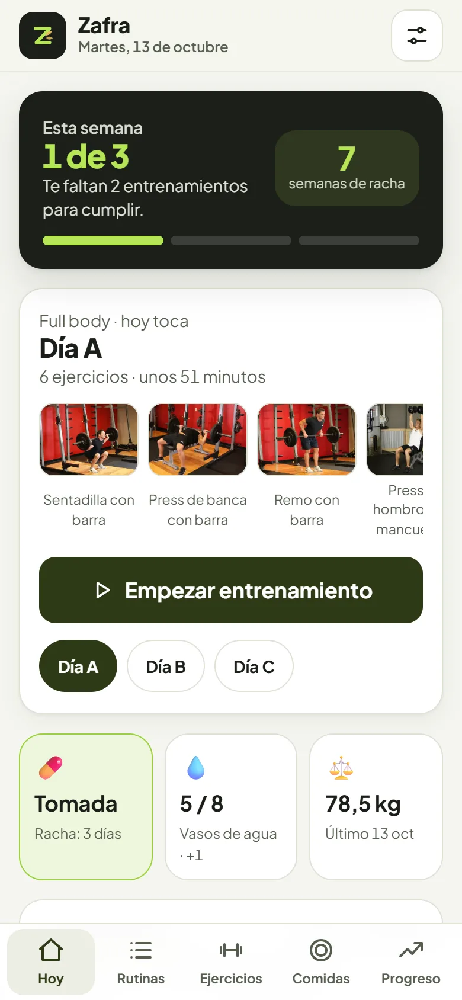
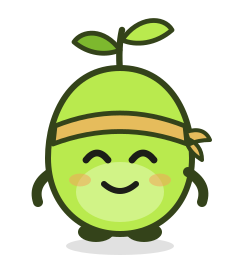
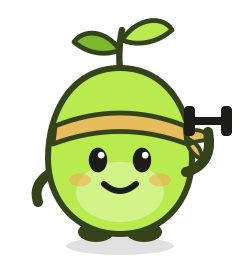
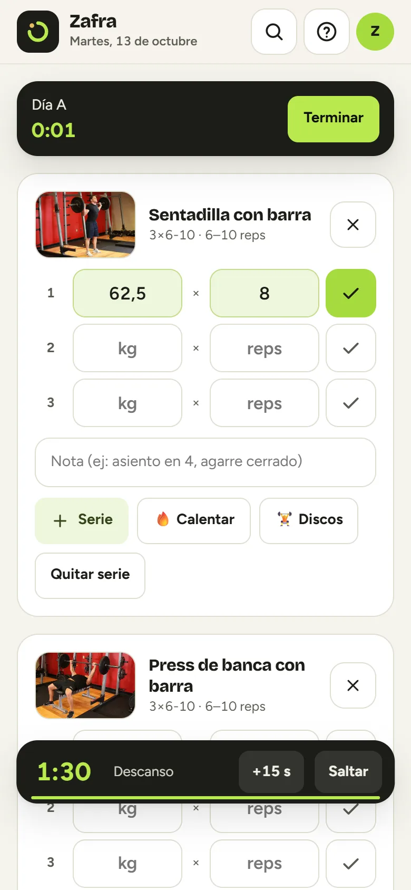
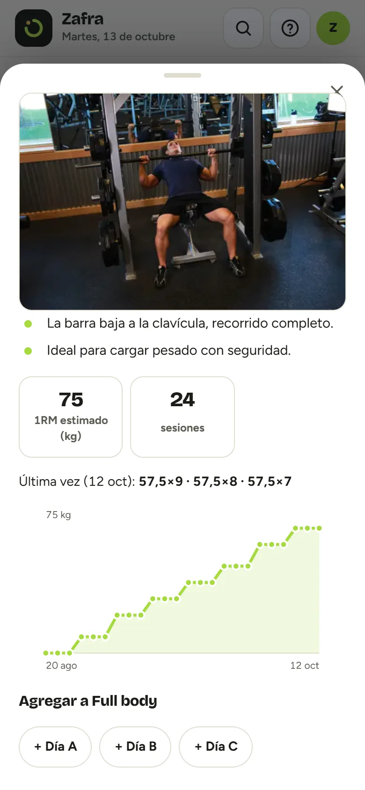
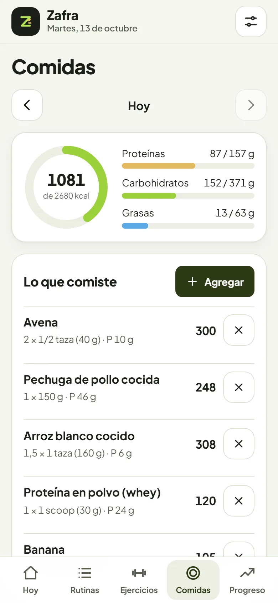
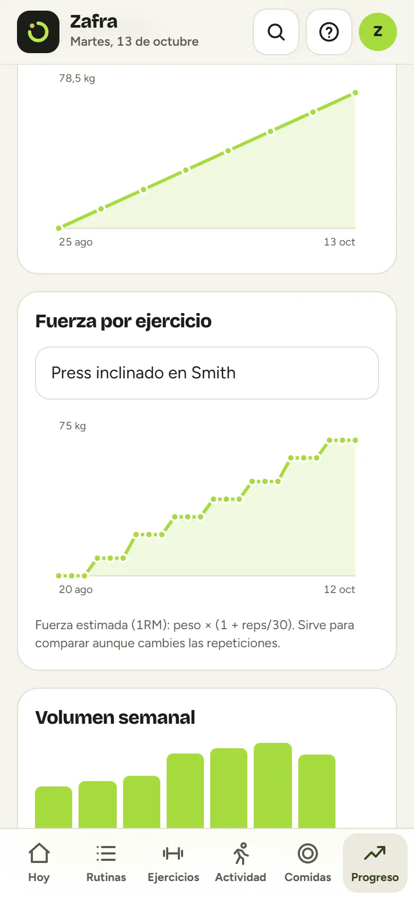

Hecha en la Patagonia · Zafra
La primera app de la Patagonia que te ayuda a crecer en el gym.
Anotás tus series, pesos y repeticiones (o se los mandás a Zafra como un mensaje de WhatsApp), le sacás una foto a tu plato para ver los macros y mirás cómo crece tu fuerza semana a semana.
Hoy no pagás nada · Después USD 5 por mes · Cancelás cuando quieras


Cada rep es una semilla
Entrenar sin anotar es sembrar sin mirar la cosecha.
Si no sabés cuánto levantaste la semana pasada, no sabés si estás progresando. Zafra te lo muestra todo el tiempo.
Zafra te dice qué día de tu rutina toca y qué levantaste la última vez en cada ejercicio.
Peso, repeticiones y listo. El descanso arranca solo y te avisa cuando volver a la barra.
Récords, fuerza estimada, volumen por semana y tu peso. La constancia se nota en los gráficos.
Sobrecarga progresiva
Zafra te dice cuándo subir. Vos solo cargás la barra.
Semana 1
60kg
🎯Hoy: 60 kg × 8 · Arrancás con lo que podés

Hola, soy Zafra IA próximamente
Tu coach con IA, adentro de la app.
Zafra crece con vos: arranca como semilla y se hace espiga a medida que subís de nivel. Y te ayuda en lo que más cuesta: anotar y comer bien.
«Banca 60kg x 8, 8, 7». Pegás o compartís el mensaje y Zafra lo guarda en el día justo de tu rutina, con récords y todo. Funciona sin IA.
Le sacás una foto a la comida y Zafra estima gramos, calorías, proteínas, carbohidratos y grasas. Vos revisás y se suma.
«Armame una rutina de 4 días», «¿cómo vengo en sentadilla?», «poneme una meta». Te responde con tus datos.
Todo lo que tiene
Una sola app para tu entrenamiento.

Entrenamiento
Series, descanso y récords sin pensar.
Zafra mira lo que hiciste la vez pasada y te dice qué peso usar hoy: subí, mantené o bajá. Marcás la serie y arranca el temporizador de descanso.
- Sobrecarga progresiva automática: el peso de hoy, calculado
- Te avisa si te estancás y te propone una semana de descarga
- ¿Máquina ocupada? Te muestra alternativas para el mismo músculo
- Temporizador de descanso con aviso y vibración
- Te marca cuando superás tu récord
- Resumen al terminar: tiempo, series y volumen

Ejercicios
Más de 120 ejercicios con animación.
Cada ejercicio muestra el movimiento, cómo hacerlo bien y tu historial. Si alguno no está, lo creás.
- Pecho, espalda, hombros, brazos, piernas, glúteos, abdomen y cardio
- Tips claros en español
- Tu mejor marca y la curva de fuerza de cada uno

Comidas
Tu meta de calorías y proteínas, calculada.
Con tu peso, altura, edad y objetivo, Zafra calcula cuánto comer. Anotás con alimentos de todos los días y ves si llegás.
- Foto del plato: Zafra calcula gramos y macros (con IA, próximamente)
- Calorías, proteínas, carbohidratos y grasas
- Agua y una guía de más de 25 suplementos

Progreso y rutinas
Tu cosecha, en gráficos.
Peso corporal, fuerza por ejercicio, volumen semanal y calendario. Y tus rutinas como quieras: plantillas o la tuya pegada desde un mensaje.
- Series por músculo cada semana y aviso si entrenás desparejo
- Plantillas: Full body, Torso/Pierna, Arnold, Empuje/Tirón/Pierna
- Pegás tu rutina o tu entrenamiento de WhatsApp y queda cargado
- Compartí tu rutina con un link: tu amigo la suma en un toque
- Tu historial en Excel (CSV) cuando quieras
- Funciona sin internet, con nube opcional para no perder nada
Un precio simple
USD 5 por mes
o USD 50 por año (2 meses gratis)
- 7 días gratis para probarla
- Se cobra en pesos por Mercado Pago
- Todas las funciones: rutinas, ejercicios, comidas, progreso y nube
- Sin permanencia: cancelás cuando quieras
Todo lo anterior más Zafra, tu coach con IA: le pasás tu entrenamiento como mensaje y lo anota, foto del plato con macros, rutinas y metas con tus datos. 100 mensajes por mes.
Preguntas frecuentes
Lo que más nos preguntan.
¿Sirve si recién empiezo?
Sí. En el primer uso elegís tu objetivo, cuántos días entrenás y tu experiencia, y Zafra arma una rutina acorde. Cada ejercicio tiene la animación y tips para hacerlo bien.
¿Puedo usar mi propia rutina?
Sí. Pegás tu rutina como la tenés en WhatsApp o en tus notas («Press inclinado — 3x8-12») y queda cargada. También la podés armar ejercicio por ejercicio.
¿Cómo anoto lo que entrené?
Como prefieras: serie por serie mientras entrenás, con la planilla rápida de cada día, o pegando el mensaje que escribís en WhatsApp («Sentadilla 80kg x 8, 8, 6»). En Android también podés compartirlo directo desde WhatsApp a Zafra.
¿Qué hace la IA Zafra?
Es el plan con IA (USD 10 por mes), que se habilita próximamente: anota tus entrenamientos desde un mensaje, calcula los macros de tu comida con una foto, te arma rutinas y metas y te dice cómo venís, con 100 mensajes por mes. Antes de cambiar algo, te muestra qué va a hacer. Pegar tu entrenamiento de WhatsApp para anotarlo ya funciona en el plan de USD 5, sin IA.
¿Necesito internet en el gimnasio?
No para entrenar: una vez instalada funciona sin conexión (la IA y la foto de comida sí necesitan internet). Podés prender la nube para no perder nada si cambiás de celular.
¿Funciona en iPhone?
Sí, en iPhone y en Android, desde el navegador o instalada como app.
¿Reemplaza a un nutricionista o a un profe?
No. Zafra es una guía para ordenarte y medir tu progreso. Ante dolores, lesiones o necesidades especiales, consultá con un profesional.
¿Cómo cancelo?
Desde Mercado Pago o desde el botón de baja, sin dar explicaciones. Si te arrepentís en los primeros 10 días, te devolvemos todo.
Zafra · Tu entrenamiento
Sembrá constancia. Cosechá resultados.
Probala 7 días gratis. Si no te sirve, cancelás y no pagás nada.